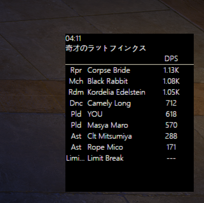
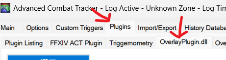
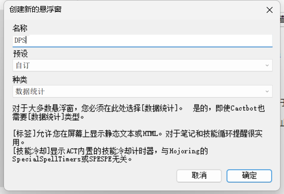
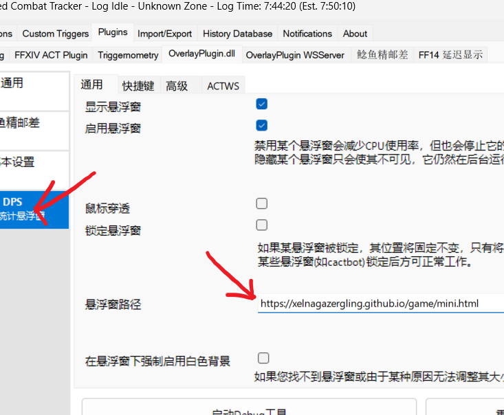

ACT OverlayPlugin插件
简易黑白悬浮窗 数据统计 显示队友职业/名称/DPS
注意：此文章写于2023年9月21日8点02分，内容可能过时。
预览
点击查看悬浮窗→迷你统计
悬浮窗效果如下图所示。左上角显示职业和boss名称，然后显示队伍成员的职业，名称，dps。写不下的会变成省略号，dps超过1000之后会以k显示。

如何使用？
1.首先找到你的OverlayPlugin插件页面，如图所示

2.然后点击左下角新建，选择自订

3.最后在悬浮窗路径一栏写上
https://xelnagazergling.github.io/game/mini.html
也就是上面预览悬浮窗的地址。
